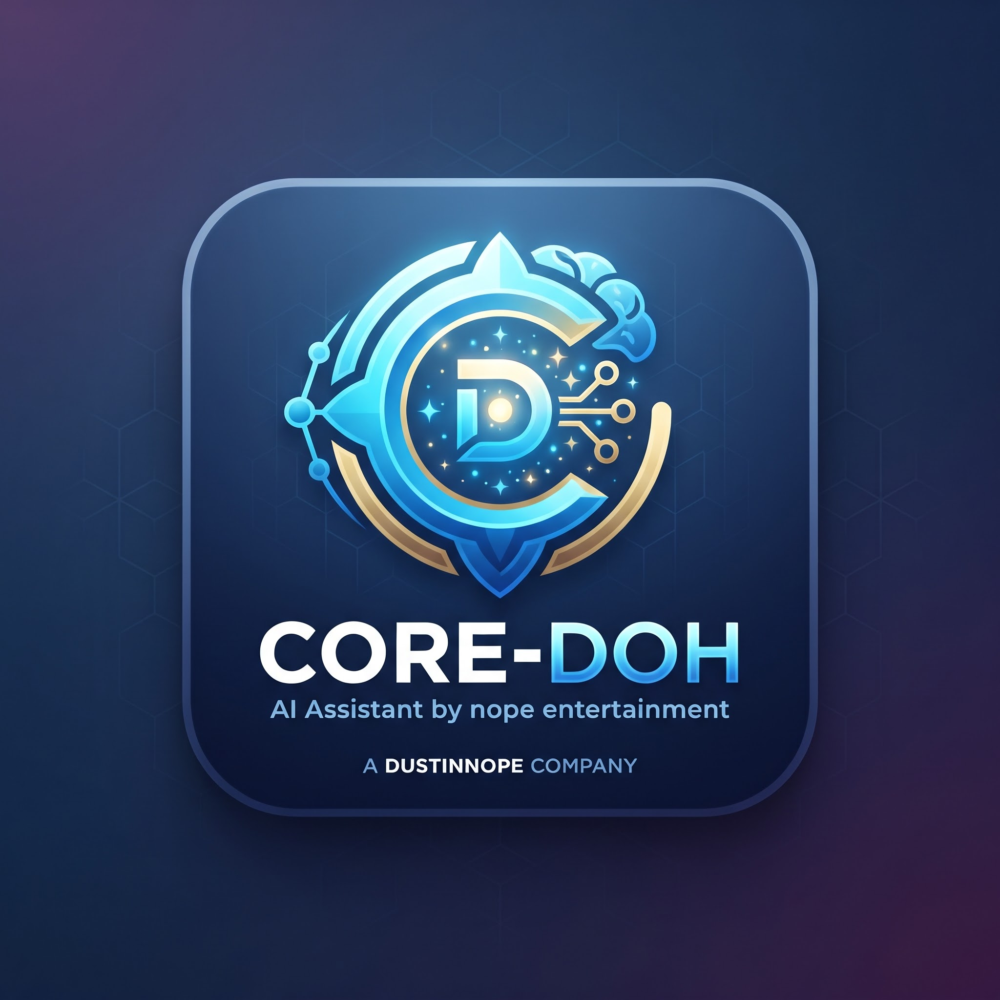

Local mode: this page talks to a local model at http://127.0.0.1:8080/v1/chat/completions when PocketPal / llama.cpp server is running. No server yet? It will save your notes and tell you the local model isn't connected — follow POCKETPAL_QUICKSTART.md. Memory is saved on this tablet only.